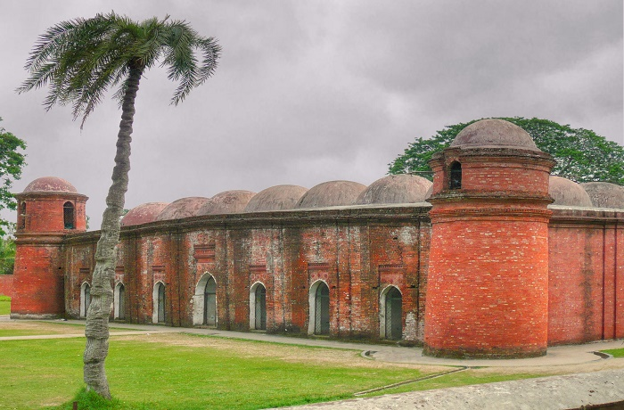
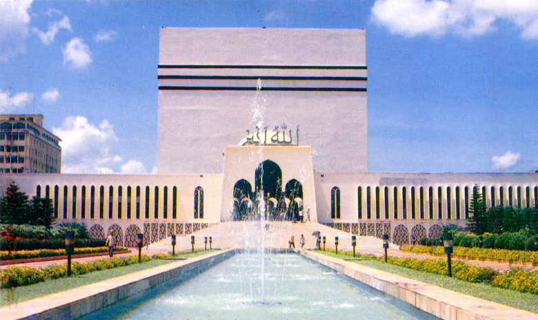
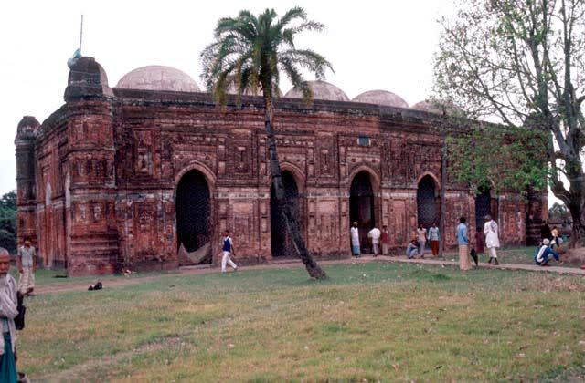
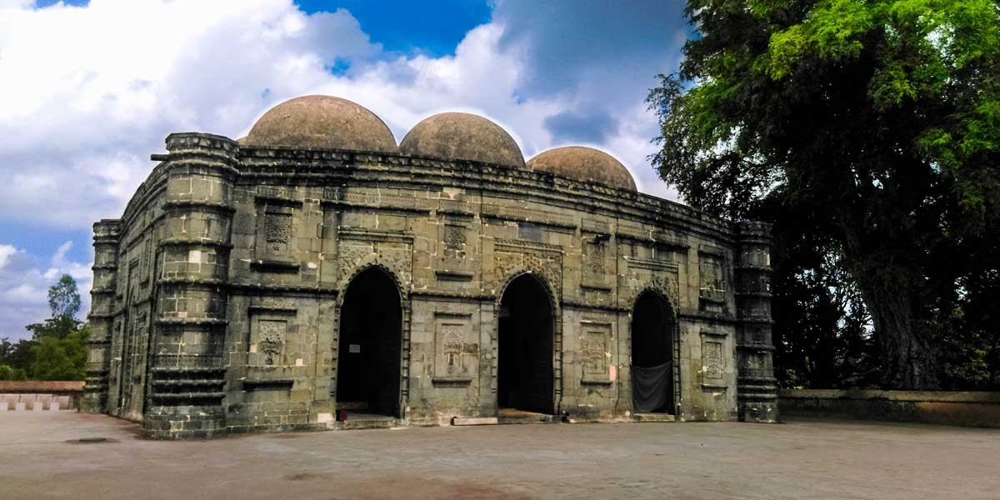
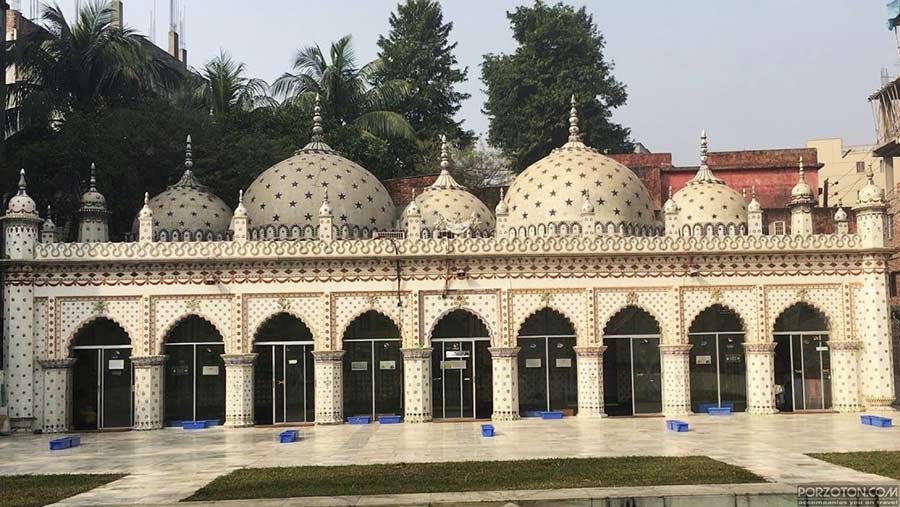

Assalamulaikum. Welcome To this Webpage. In this page, you will see top 5 Mosque in Bangladesh.
Muslim means Mosque. Where the Muslims, there is a mosque there. There will be Muslims and there will be no mosque that cannot happen. Bangladesh is a Muslim country; you find a lot of Muslims here and also find other religions such as Hindu, Christians, Buddhists, and others in there. But the majority of them are Muslims. So, there are so many mosques in Bangladesh. But most of the mosques are remain a story.
According to the Muslim rulers, there are so many mosques are built in Bangladesh that was beautiful, and marvelous. Among most of them are located in Dhaka city. That's why; Dhaka is called the city of the mosque.
The highly historical architectural mosque is available here. For the Salah time, every Muslim is going to the Mosque for praying. Now, we discuss and highlight with you the "Top 10 Most Beautiful Mosque in Bangladesh" that I highly recommended for all Muslims.
Here's a list of the 05 Most Beautiful Mosques in Bangladesh,
01.Sixty-Dome Mosque:
Sixty-Dome Mosque also called Shhat Gombuj Masjid was started their building construction in 1442. But it was finally completed in 1459. It needs a lot of time for final construction. According to Khan Jahan Ali, it was situated in Bagerhat, Khulna Bangladesh. There are seventy-seven domes in the middle of the mosque. UNESCO declared this mosque as a world heritage site in Bangladesh. As a Bangladeshi person, we should be very proud of it.

02.Baitul Mukarram National Mosque:
The national mosque of Bangladesh is Baitul Mukarram National Mosque. For their huge size and ability, it obtains the highest position as the 10th biggest mosque in the worldwide. It is located on Topkhana Road, Dhaka, Bangladesh. Every Muslim should visit this mosque with their whole family. This mosque sustains Mughal influence architecture.

03.Bagha Mosque:
By Sultan Nusrat Shah, Bagha Mosque in Rajshahi was established in 1523 in Bangladesh. During the Hussain Shahi period, it was a historical and architectural monument of Bangladesh. The mosque was looking gorgeous and beautiful for its terracotta art, wall surface, mihrabs, grapes, and floral patterns. For their monument architecture, I take this mosque in the top one on our list in the best beautiful mosque in Bangladesh.

04.Kusumba Mosque:
According to the Sultan Period, Kusumba Mosque is the best token of a popular mosque in Bangladesh. It was constructed in 1558 in Rajshahi, Bangladesh by Sultan Ghiyasuddin Bahadur Shah. It looks like a rectangular mosque. There are six stone hemispherical domes in the center of the mosque. Dark black stones are used in this mosque that gives an amazing look in these mosques. It is also designed for massive stone pillars. That’s why I take Kusumba Mosque in the top number four on our list.

05.Star Mosque:
The Star Mosque of Bangladesh is also famous for its unique design and also called Tara Masjid in Dhaka city. It comes with a long history in the ancient 19th century and dedicated their name in case of their blue star mosaics that were already designed in the front of the mosque already gives a unique emergence or outlook of the mosque. The mosque was situated in Dhaka Bangladesh. The mosaic pattern of the mosque gives an amazing looking to other mosques in Bangladesh.
